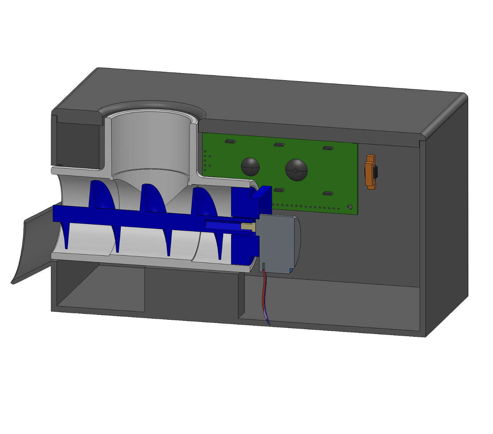
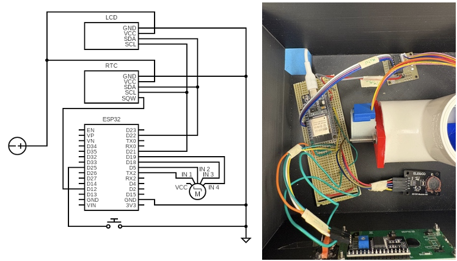

In this project I created a fully autonomous automatic cat feeder that dispenses a user-specified amount of food at two user specified times each day. The system is controlled by an ESP32 microcontroller and connects over WiFi, letting the user set feeding times and portion sizes from any device. It combines custom mechanical design of a 3D printed housing and food dispensing system, a hand-soldered circuit, and embedded C++.
The goal was to build a feeder that could run independently for short trips without any manual intervention. Key requirements were reliable scheduled dispensing, easy user configuration without physical access to the device, a robust housing that could be opened for repairs but cannot be opened by a cat, and a manual override button.
Food dispensing is handled by a stepper motor driving a screw auger through a 1.5" PVC tee channel, with portion size controlled by the number of motor revolutions. The full assembly was modeled in SolidWorks before fabrication. The circuit was designed from scratch and hand-soldered onto a protoboard. It integrates a DS1307 real time clock for timekeeping, a 16x2 I2C LCD displaying countdown to the next feed, and a recessed push button for manual feeding. The ESP32 hosts a WiFi access point and a lightweight web server, serving an HTML page where the user sets two daily feed times and a serving count.
The feeder works reliably for scheduled and manual dispensing, with repeated testing confirming no clogging. The WiFi interface successfully updates feeding times and portions remotely, and the LCD countdown runs smoothly. The biggest lessons from this project came from the soldering process, working through multiple wiring mistakes ultimately led to a much cleaner final circuit and a solid understanding of protoboard layout.

